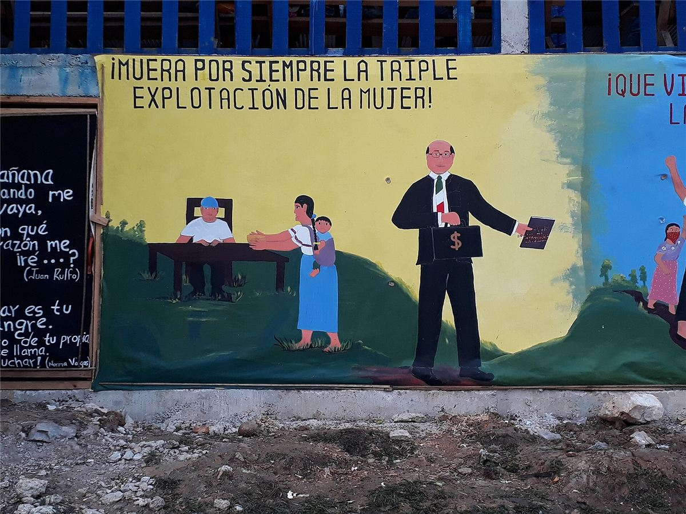
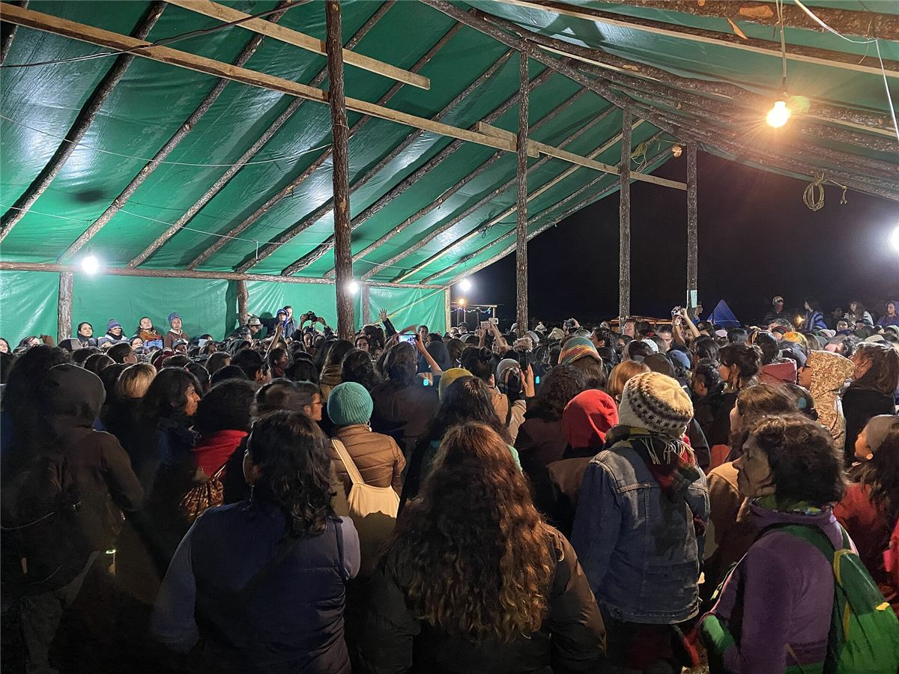

La Loi révolutionnaire des femmes

Adoptée en 1993, avant même le soulèvement, après une consultation des femmes dans les communautés, elle affirme notamment :
- le droit de participer à la lutte et d'y occuper des charges, y compris militaires ;
- le droit de travailler et de recevoir un revenu juste ;
- le droit de décider du nombre d'enfants qu'elles auront ;
- le droit de choisir leur partenaire, et de ne pas être mariées de force ;
- le droit à la santé, à l'alimentation et à l'éducation ;
- l'interdiction des violences, avec des sanctions contre les agresseurs.
Les zapatistes reconnaissent eux-mêmes que l'application reste un combat. En 2018 et 2019, ils ont organisé de grandes rencontres internationales des femmes qui luttent dans leurs territoires.
Le commun
Depuis 2023, les zapatistes proposent de travailler une partie des terres récupérées en commun, sans propriétaire : ni privée, ni d'État, ni même communautaire au sens d'une communauté qui posséderait. Ces terres peuvent être travaillées aussi par des voisins non zapatistes, avec des règles fixées ensemble. C'est un pas de plus vers une société sans propriété de la terre.
Les menaces
- Militarisation : l'armée et la garde nationale mexicaines entourent les territoires zapatistes.
- Paramilitaires : depuis le massacre d'Acteal (1997), des groupes armés attaquent les communautés et s'emparent de terres.
- Cartels : depuis le début des années 2020, la guerre entre groupes criminels pour contrôler le Chiapas déplace des milliers de personnes.
- Grands projets : le « Train maya » et les couloirs industriels menacent les terres et l'eau.
Ce que les libertaires en retiennent

- Ne pas prendre le pouvoir : changer le monde sans conquérir l'État, en construisant l'autonomie là où l'on vit.
- Le temps long : trente ans de construction patiente, d'erreurs reconnues et de corrections.
- Les limites discutées : l'existence d'une structure politico-militaire (l'EZLN et son commandement) au cœur du mouvement, et l'isolement face à la violence armée.
- La solidarité internationale : achats de café zapatiste, rencontres, caravanes ; elle reste une ressource vitale.
Retour au début : histoire de la rébellion. Voir aussi le dossier Rojava, autre expérience d'autonomie.
Dossier rédigé par Mamie Commune à partir de travaux d'historiennes et d'historiens et de textes des mouvements concernés. Libre de reproduction.